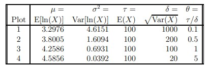
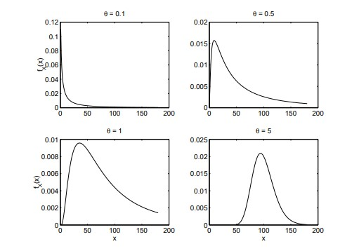
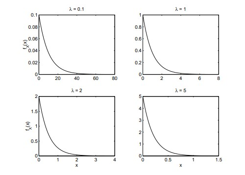

6 연속분포족
6.1 정규분포
- 표준정규분포의 PDF와 CDF
\[ f_Z(z)=\frac{e^{-z^2/2}}{\sqrt {2\pi}}\]
\[ F_Z(z)=P(Z\leq z)= \Phi(z) =\int_{-\infty}^zf_z(u)du\]
- \(f_Z(z)\)의 적분값이 1임을 확인하기 위해 다음과 같이 \(K^2\)를 살펴보자. 여기서 \(K=\int _{-\infty}^{\infty}e^{-u^2/2}du\)이다.
\[\begin{align} K^2 &= \Bigg(\int_{-\infty}^{\infty}e^{-u^2/2}du\Bigg)^2 \\ &=\Bigg(\int_{-\infty}^{\infty}e^{-u_1^2/2}du_1\Bigg)\Bigg(\int_{-\infty}^{\infty}e^{-u_2^2/2}du_2\Bigg) \\ &=\Bigg(\int_{-\infty}^{\infty}\int_{-\infty}^{\infty}e^{-\frac{1}{2}(u_1^2+u_2^2)}du_1du_2 .\Bigg) \end{align} \]
- 이제 극좌표로 변환하자.
\[\begin{align} u_1&=r\sin\theta; u_2= r\cos\theta \quad\text{그리고} \\ K^2&=\int_0^{2\pi}\int_0^\infty e^{-\frac{1}{2}(r^2)}r \ drd\theta \\ &= \int_0^{2\pi}\Bigg[-e^{\frac{1}{2}(r^2)}r \ drd\theta \\ &= \int_0^{2\pi}1d\theta \ =2\pi \end{align} \]
따라서 \(K=\sqrt{2\pi}\)이고 \(f_Z(z)\)의 적분값은 1이다.
일반적인 정규분포: \(Z\)에서 \(X=\mu+\sigma Z\)로 변환하자. 여기서 \(\mu\)와 \(\sigma\)는 \(|\mu|<\infty\) 및 \(0<\sigma<\infty\)를 만족하는 상수이다.
역변환은 \(z=(x-\mu)/\sigma\)이고, 이 변환의 야코비안은 다음과 같다.
\[ |J|= \Bigg|\frac{dz}{dx}\Bigg| =\frac{1}{\sigma}\]
따라서 \(X\)의 pdf는 다음과 같다.
\[f_X(x)=f_Z(\frac{x-\mu}{\sigma})\frac{1}{\sigma}=\frac{e^{-\frac{1}{2\sigma^2}(x-\mu)^2}}{\sqrt{2\pi\sigma^2}}.\]
\(X\)가 모수 \(\mu\)와 \(\sigma\)를 갖는 정규분포를 따른다는 뜻으로 \(X\sim N(\mu,\sigma^2)\)라는 표기를 사용한다.
모멘트생성함수: \(X\sim N(\mu,\sigma^2)\)라고 하자. 그러면
\[\psi_X(t)=e^{\mu t+t^2\sigma^2/2.}\]
- 증명:
\[ \psi_X(t)=E(e^{tX})=\int_{-\infty}^\infty e^{tX}\frac{e^{-\frac{1}{2\sigma^2}(x-\mu)^2}}{\sqrt{2\pi\sigma^2}}dx=\int_{-\infty}^\infty \frac{e^{-\frac{1}{2\sigma^2}[-2t\sigma^2x+(x-\mu)^2]}}{\sqrt{2\pi\sigma^2}}dx \]
- 핵심은 지수부에서 완전제곱을 만드는 것이다.
\[=-2t\sigma^2+(x-\mu)^2=-2t\sigma^2x+x^2-2x\mu+\mu^2=x^2-2x(\mu+t\sigma^2)+\mu^2\]
\[=[x-(\mu+t\sigma^2)]^2-(\mu+t\sigma^2)^2+\mu^2=[x-(\mu+t\sigma^2)]^2-2\mu\sigma^2-t^2\sigma^4\]
따라서
\[ =\int_{-\infty}^\infty \frac{e^{-\frac{1}{2\sigma^2}[-2t\sigma^2x+(x-\mu)^2]}}{\sqrt{2\pi\sigma^2}}dx \ \text{여기서} \ \mu^*=\mu + t\sigma^2\]
\[ =e^{t\mu+t^2\sigma^2/2} \]
- 두 번째 항은 분포가 \(N(\mu^*,\sigma^2)\)인 확률변수의 pdf를 적분한 것이고, 그 적분값은 1이기 때문이다.
정규분포의 모멘트
- 표준정규분포의 모멘트: \(Z\)가 \(\mu=0\), \(\sigma=1\)인 정규 확률변수라고 하자. 즉, \(Z\sim N(0,1)\)이다.
- \(Z\)의 모멘트생성함수는 \(\psi_Z(t)=e^{t^2/2}\)이다.
- \(t=0\) 주위에서 \(\psi_Z(t)\)를 테일러 전개하면 다음과 같다.
\[\psi_Z(t)=e^{t^2/2}=\Sigma_{i=0}^\infty\frac{1}{i!}\Bigg(\frac{t^2}{2}\Bigg)^i =\Sigma_{i=0}^\infty\Bigg(\frac{(2i)!}{2^ii!}\Bigg)\Bigg(\frac{t^{2i}}{(2i)!}\Bigg)\]
- 전개식에서 모든 홀수 차수의 항은 0임에 주의하자. 따라서
\[ E(Z^r)=\begin{cases}0 & \text{$r$이 홀수이면} \\ \frac {r!}{2^{r/2}(\frac{r}{2})!} & \text{$r$이 짝수이면}.\end{cases} \]
- \(r\)이 짝수이면 다음이 성립함을 수학적 귀납법으로 보일 수 있다.
\[ \frac{r!}{2^{r/2}}(\frac{r}{2})!=(r-1)(r-3)(r-5)···1\]
특히 \(E(Z)=0\)이고 \(\mathrm{Var}(Z)=E(Z^2)=1\)이다.
- 일반적인 정규분포의 모멘트: \(X\sim N(\mu,\sigma^2)\)라고 하자. 그러면 \(Z\sim N(0,1)\)인 \(Z\)에 대해 \(X=\mu+\sigma Z\)로 쓸 수 있다. \(X\)의 모멘트를 구할 때는 \(Z\)의 모멘트를 이용하거나 \(X\)의 모멘트생성함수를 미분할 수 있다. 예를 들어 \(Z\)의 모멘트를 이용하면 \(X\)의 처음 두 모멘트는 다음과 같다.
\[E(X) = E(\mu + \sigma Z) = \mu + \sigma E(Z) = \mu\]
그리고
\[E(X^2)=E[(\mu + \sigma Z)^2]=E[\mu^2+2\mu\sigma Z+\sigma^2Z^2]=\mu^2+\sigma^2\]
\(\mathrm{Var}(X)=E(X^2)-[E(X)]^2=\sigma^2\)임에 주의하자.
다른 방법은 모멘트생성함수를 사용하는 것이다.
\[ \begin{align} E(X)&=\psi_X(t)\frac{d}{dt}\Bigg|_{t=0}=\frac{d}{dt}e^{\mu t+t^2\sigma^2/2}\Bigg|_{t=0} \\ &=(\mu+ t\sigma^2)e^{\mu t+t^2\sigma^2/2}\Bigg|_{t=0}=\mu \quad\text{그리고} \end{align} \]
\[ \begin{align} E(X^2)&=\frac{d^2}{dt^2}\psi_X(t)\Bigg|_{t=0}=\frac{d}{dt}(\mu+ t\sigma^2)e^{\mu t+t^2\sigma^2/2}\Bigg|_{t=0} \\ &=\sigma^2e^{t\mu+t^2\sigma^2/2}+(\mu+ t\sigma^2)e^{\mu t+t^2\sigma^2/2}\Bigg|_{t=0}=\mu^2+\sigma^2 \end{align} \]
표준정규 확률변수를 생성하는 Box-Muller 방법. \(Z_1\)과 \(Z_2\)가 \(Z_i\sim N(0,1)\)인 iid 확률변수라고 하자.
\(Z_1\)과 \(Z_2\)의 결합 pdf는 다음과 같다.
\[ f_{Z_1},f_{Z_2}(z_1,z_2)=\frac{e^{\frac{1}{2}(z_1^2+z_2^2)}}{2\pi} \]
- 극좌표로 변환하자: \(Z_1=R\\sin(T)\), \(Z_2=R\\cos(T)\). \(R\)과 \(T\)의 결합분포는 다음과 같다.
\[ \begin{align} f_{(R_1,T)}(r,t)&=\frac{re^{-\frac{1}{2}r^2}}{2\pi}I_{(0,\infty)}(r)I_{(0,2\pi)}(T)=f_R(r)\times f_T(t) \text{여기서} \\ f_R(r)&=re^{-\frac{1}{2}r^2}I_{(0,\infty)}(r)I_{(0,2\pi)}\quad\text{그리고} f_T(t)=\frac{1}{2\pi}I_{(0,2\pi)}(t). \end{align} \]
- 결합 pdf가 인수분해되므로 \(R\)과 \(T\)는 독립이다. 각각의 cdf는 다음과 같다.
\[ F_R(r)=1-e^{\frac{1}{2}r^2} \text{ and } F_T(t)=\frac{t}{2\pi} \]
- \(U_1=F_R(R)\), \(U_2=F_T(T)\)라고 하자. \(U_i\sim\mathrm{Unif}(0,1)\)임을 상기하자.
- cdf 방정식을 \(R\)과 \(T\)에 대해 풀면 다음을 얻는다.
\[ R=\sqrt{-2\ln(1-U_1)}\quad\text{그리고}\ T=2\pi U_2 \]
마지막으로 \(Z_1\)과 \(Z_2\)를 \(R\)과 \(T\)의 함수로 표현하면 다음과 같다.
\[ \begin{align} Z_1&=R\sin(T)=\sqrt{-2\ln(1-U_1)}\sin(2\pi U_2) \quad\text{그리고} \\ Z_2&=R\cos(T)=\sqrt{-2\ln(1-U_1)}\cos(2\pi U_2) \end{align} \]
- \(U_1\)과 \(1-U_1\)은 같은 분포를 가진다는 점에 주의하자. 따라서 \(Z_1\)과 \(Z_2\)는 \(U_1\)과 \(U_2\)로부터 다음과 같이 생성할 수 있다.
\[ Z_1=\sqrt{-2\ln(U_1)}\sin(2\pi U_2) \text{ and } Z_2=\sqrt{-2\ln(U_1)}\cos(2\pi U_2) \]
정규 확률변수의 선형함수: \(X\)와 \(Y\)가 서로 독립이고 다음 분포를 갖는다고 하자. \(X\sim N(\mu_X,\sigma_X^2)\)이고 \(Y\sim N(\mu_Y,\sigma_Y^2)\)이다.
- \(aX+b\)의 분포는 \(N(a\mu_X+b,a^2\sigma_X^2)\)이다.
- 증명: \(aX+b\)의 모멘트생성함수는 다음과 같다.
\[ \psi_{aX+b}(t)=E(e^{t(aX+b)})=e^{tb}E(e^{taX})=e^{tb}e^{ta\mu+t^2a^2\sigma^2/2}=e^{a\mu +b)+t^2(a\sigma)^2/2} \]
이는 분포가 \(N(a\mu+b,a^2\sigma^2)\)인 확률변수의 모멘트생성함수이다.
- 다음 확률변수의 분포는 \(aX+bY\sim N(a\mu_X+b\mu_Y,a^2\sigma_X^2+b^2\sigma_Y^2)\)이다.
- 증명: \(aX+bY\)의 모멘트생성함수는 다음과 같다.
\[ \begin{align}\psi_{aX+bY}(t)&=E(e^{t(aX+bY)})=e^{tb}E(e^{taX})E(e^{tbY}) \text{ by independence } \\&=e^{ta\mu_X+t^2a^2\sigma^2_X/2}e^{tb\mu _Y+t^2b^2\sigma^2_Y/2}=e^{t(a\mu _X+b\mu_Y)+t^2(a^2\sigma^2_X+b^2\sigma^2_Y)/2}. \end{align}\ \]
이는 분포가 \(N(a\mu_X+b\mu_Y,a^2\sigma_X^2+b^2\sigma_Y^2)\)인 확률변수의 모멘트생성함수이다.
- 위 결과는 쉽게 일반화된다. 다음과 같이 가정하자. \(i=1,\dots,n\)에 대해 \(X_i\sim N(\mu_i,\sigma_i^2)\)이고 서로 독립이다.
- \(T=\sum_{i=1}^n a_iX_i\)이면 \(T\sim N(\mu_T,\sigma_T^2)\)이고, 여기서 \(\mu_T=\sum_{i=1}^n a_i\mu_i\), \(\sigma_T^2=\sum_{i=1}^n a_i^2\sigma_i^2\)이다.
확률과 백분위수
- \(X\sim N(\mu_X,\sigma_X^2)\)이면 구간에 대한 확률은 다음과 같다.
\[ \begin{align} P(a\le X\le b)&=P\Bigg[\frac{a-\mu_X}{\sigma_X}\le Z\le\frac{b-\mu_X}{\sigma_X}\Bigg]\\ &=\phi\Bigg(\frac{b-\mu_X}{\sigma_X}\Bigg)-\phi\Bigg(\frac{a-\mu_X}{\sigma_X}\Bigg) . \end{align}\ \]
- \(X\sim N(\mu_X,\sigma_X^2)\)이면 \(X\)의 \(100p\)번째 백분위수는 다음과 같다. \[x_p=\mu X+\sigma_Xz_p\]
여기서 \(z_p\)는 표준정규분포의 \(100p\)번째 백분위수이다.
- 증명:
\[P(X\le\mu_X+\sigma_Xz_p)=P\Bigg(\frac{X-\mu_X}{\sigma_X}\le z_p\Bigg)=P(Z\le z_p)=p\]
이는 \(Z\sim N(0,1)\)이기 때문이다.
로그정규분포
- 정의: \(\\ln(X)\sim N(\mu,\sigma^2)\)이면 \(X\)는 로그정규분포를 따른다고 한다. have a log normal distribution.
\[\ln(X)\sim N(\mu,\sigma^2) \Leftrightarrow X \sim \\mathrm{LogN}(\mu,\sigma^2). \]
주의: \(\mu\)와 \(\sigma^2\)는 \(X\)의 평균과 분산이 아니라 \(\\ln(X)\)의 평균과 분산이다.
PDF: \(Y=\\ln(X)\)이고 \(Y\sim N(\mu,\sigma^2)\)라고 하자.
- \(g(y)=e^y\)이고 \(g^{-1}(x)=\\ln(x)\)일 때, \(x=g(y)\) 및 \(y=g^{-1}(x)\)임에 주의하자.
- 이 변환의 야코비안은 다음과 같다.
\[ |J|=\Bigg|\frac{dy}{dx}\Bigg|=\frac{1}{x} \]
- 따라서 \(X\)의 pdf는 다음과 같다.
\[f_X(x)=f_Y[g^{-1}(x)]\frac{1}{x}=\frac{e^{-\frac{1}{2\sigma^2}[\ln(x)-\mu]^2}}{x\sqrt{2\pi\sigma^2}}I_{(0,\infty)}(x).\]
- CDF: \(Y\sim \mathrm{LogN}(\mu,\sigma^2)\)이면
\[P(Y \le y)=P[\ln(Y)\le \ln(y)]=\phi \Bigg(\frac{1n(y)-\mu}{\sigma}\Bigg).\]
- 로그정규 확률변수의 모멘트.
- \(X\sim \mathrm{LogN}(\mu,\sigma^2)\)라고 하자.
- 그러면 \(E(X^r)=e^{\mu r+r^2\sigma^2/2}\)이다.
- 증명: \(Y=\\ln(X)\)라고 하자. 그러면 \(Y\sim N(\mu,\sigma^2)\)이고
\[ E(X^r)=E(e^{rY})=e^{r\mu +r^2\sigma^2/2} \]
마지막 결과는 정규 확률변수의 MGF를 이용하여 얻는다. 평균과 분산을 구하려면 \(r\)에 1과 2를 대입한다.
\[ E(X)=e^{\mu+\sigma^2} \text{ and } Var(X)=e^{2\mu +2\sigma^2}-e^{2\mu+\sigma^2}=e^{2\mu+\sigma^2}\bigg[e^{\sigma^2}-1\bigg] \]
- 다양한 로그정규분포의 그림. 아래 그림은 네 가지 로그정규분포를 나타낸다. 분포의 모수는 다음 표에 요약되어 있다.

- 각 분포의 평균이 100임에 주의하자. 분포들은 변동계수인 \(\theta\) 값에서 차이가 난다.

- 변동계수가 작으면 로그정규분포는 지수분포와 비슷하다. 변동계수가 증가함에 따라 로그정규분포는 정규분포에 가까워진다. increases, the log normal distribution converges to a normal distribution.
6.2 지수분포
PDF: \(f_X(x)=\lambda e^{-\lambda x}I_{[0,\infty)}(x)\)이며, 여기서 \(\lambda\)는 양의 모수이다.
CDF: \(x\geq0\)일 때 \(F_X(x)=1-e^{-\lambda x}\)이다.
\(X\)가 모수 \(\lambda\)를 갖는 지수분포를 따른다는 뜻으로 \(X\sim\mathrm{Exp}(\lambda)\)라는 표기를 사용한다.
\(100p\)번째 백분위수는 \(x_p=-\\ln(1-p)/\lambda\)임에 주의하자.
예를 들어 중앙값은 \(x_{0.5}=\\ln(2)/\lambda\)이다.
모멘트생성함수: \(X\sim\mathrm{Exp}(\lambda)\)이면 \(t<\lambda\)에서 \(\psi_X(t)=\lambda/(\lambda-t)\)이다.
- 증명:
\[ \begin{align} \psi_X(t)&=E(e^{tx})=\int_0^\infty e^{tx}\lambda e^{-\lambda x}dx \\ &=\int_0^\infty \lambda e^{(\lambda -t)x}dx=\frac{\lambda}{\lambda-t}\int_0^\infty (\lambda -t)e^{(\lambda -t)x}dx=\frac{\lambda}{\lambda-t} \end{align} \]
마지막 적분은 분포가 \(X\sim\mathrm{Exp}(\lambda)\)인 확률변수의 pdf를 적분한 것이기 때문이다. 단, \(\lambda-t>0\)이어야 한다.
모멘트: \(X\sim\mathrm{Exp}(\lambda)\)이면 \(E(X^r)=r!/\lambda^r\)이다.
- 증명:
\[ \begin{align} \psi_X (t)&=\frac{\lambda}{\lambda-t}=\frac{1}{1-t/\lambda}=\Sigma^\infty_{r=0}\bigg(\frac{t}{\lambda}\bigg)^r \\ &=\Sigma^\infty_{r=0}\bigg(\frac{t^r}{r!}\bigg)\bigg(\frac{r!}{\lambda^r}\bigg) \end{align} \]
단, \(-\lambda<t<\lambda\)이다.
\(E(X)=1/\lambda\), \(E(X^2)=2/\lambda^2\), \(\mathrm{Var}(X)=1/\lambda^2\)임에 주의하자.
지수분포의 그림. 아래는 네 가지 지수분포의 그래프이다. distributions.
- 분포의 모양은 모두 동일하다는 점에 주의하자.

무기억성
- \(X\sim\mathrm{Exp}(\lambda)\)라고 하자.
- 이 확률변수는 어떤 사건이 발생할 때까지의 대기시간으로 생각할 수 있다.
- 구간 \([0,w)\)에서 사건이 발생하지 않았다는 조건하에, 추가 대기시간이 적어도 \(t\)일 확률을 구하라.
- 즉, \(P(X>t+w\mid X>w)\)를 구하라.
- 주의: \(P(X>t)\)는 때때로 신뢰도 함수라고 불린다.
- 이를 \(R(t)\)로 나타내며, \(F_X(t)\)와 다음 관계가 있다.
\[ R(t)=P(X \gt t)=1-P(X \le t)=1-F_X(t) \]
신뢰도 함수는 제품의 수명, 즉 고장까지의 시간이 적어도 \(t\) 단위 이상일 확률을 나타낸다. product (i.e., waiting for failure) is at least \(t\) units.
지수분포에서 신뢰도 함수는 \(R(t)=e^{-\lambda t}\)이다.
- 우리는 조건부 신뢰도 함수 \(R(t+w\mid X>w)\)에 관심이 있다.
- 풀이:
\[ \begin{align} R(t+\omega|X \gt \omega)&=P(X > t + w|X > w)=\frac{P(X > t + w)}{P(X > w)} \\ &=\frac{e^{-\lambda (t+\omega)}}{e^{-\lambda\omega}}=e^{-\lambda t}. \end{align} \]
또한 \(R(t+w\mid X>w)=1-F_X(t+w\mid X>w)\)이므로 \(F_X(t+w\mid X>w)=1-e^{-\lambda t}\)이다.
즉, 이미 얼마나 오래 기다렸는지와 관계없이 남은 수명의 조건부분포는 여전히 \(\mathrm{Exp}(\lambda)\)이다.
- 마치 분포가 우리가 이미 \(w\) 시간 단위만큼 기다렸다는 사실을 기억하지 못하는 것과 같다.
포아송 과정의 도착 간격 시간: 사건들이 발생률 모수 \(\lambda\)를 갖는 포아송 과정에 따라 발생한다고 하자.
- 과정은 시간 0에서 시작한다고 가정한다.
- \(T_1\)을 첫 번째 사건의 도착시간이라 하고, \(T_r\)을 \((r-1)\)번째 도착부터 \(r\)번째 도착까지의 시간간격이라고 하자.
- 즉, \(T_1,\dots,T_n\)은 도착 간격 시간이다.
- \(T_1,T_2,\dots,T_n\)의 결합분포를 구할 것이다.
- 결합 pdf를 생각하자.
\[ \begin{align} f_{T_1,T_2,\dots,T_n}(t_1,t_2,\dots,t_n)&=f_{T_1}(t_1)\times f_{T_2|T_1}(t_2|t_1)\times f_{T_3|T_1,T_2}(t_3|t_1,t_2) \times\dots\times f_{T_n|T_1,\dots,T_n}(t)_n|t_1,\dots,t_{n-1}) \end{align} \]
곱셈법칙에 의해 성립한다.
- 첫 번째 항을 구하기 위해 먼저 \(T_1\)의 cdf를 구하자.
\[ \begin{align} f_{T_1}(t_1)&= P(T_1 \le t_1)=P[one\ or\ more\ events\ in\ (0,t_1)]\\ &=1-P[no \ events \ in \ (0,t_1)]=1-\frac{e^{-\lambda t_1}(\lambda t_1)^0}{0!}=1-e^{-\lambda t_1}. \end{align} \]
- CDF를 미분하면 다음을 얻는다.
\[ f_{T_1}(t_1)\frac{d}{dt_1}(1-e^{-\lambda t_1})=\lambda e^{-\lambda t_2} \]
- 나머지 조건부 pdf들도 모두 지수 pdf이다. 따라서
\[ f_{T_1,T_2,\dots,T_n}(t_1,t_2,\dots,t_n)=\prod _{i=1}^n \lambda e^{-\Lambda t_i}I_{[0,\infty)}(t_i) \]
이 결합 pdf는 \(n\)개의 주변 지수 pdf의 곱이다. 따라서 도착 간격 시간들은 iid 지수 확률변수이다. 즉, \(T_i\overset{iid}{\sim}\mathrm{Exp}(\lambda)\)이다.
6.3 감마분포
얼랑분포
- 발생률 모수 \(\lambda\)를 갖는 포아송 과정을 생각하자. 과정이 시간 0에서 시작한다고 가정하자. \(Y\)를 \(r\)번째 도착시간이라고 하자. 미분법을 이용하면 \(Y\)의 pdf는 다음과 같이 얻을 수 있다.
\[ \begin{align} P(t<Yt+dt) &\approx P(r-1\ arrivals \ before \ time \ t) \times P[one\ arrival \ in (t,t + dt)] \\ &=\frac{e^{-\lambda t}(\lambda t)^{r-1}}{(r-1)!}\times λdt \end{align} \]
따라서
\[ f_Y(y)=\frac{e^{-\lambda y}\lambda^r y^{r-1}}{(r-1)!}I_{[0, \infty )}(y) \]
위 pdf를 얼랑 pdf라고 한다.
\(Y\)는 \(r\)개의 iid \(\mathrm{Exp}(\lambda)\) 확률변수들의 합임에 주의하자. 따라서 \(E(Y)=r/\lambda\)이고 \(\mathrm{Var}(Y)=r/\lambda^2\)이다.
얼랑 확률변수의 CDF: \(F_Y(y)=1-P(Y>y)\)이고 \(P(Y>y)\)는 \([0,y)\)에서 \(r\)개보다 적은 사건이 발생할 확률이다. 따라서 is the probability that fewer that r events occur in \([0, y)\). Accordingly,
\[ F_Y (y) = 1 - P(Y > y)=1-\Sigma_{i=0}^{r-1}\frac{e^{-\lambda y}(\lambda y)^i}{i!} \]
감마함수
- 정의:
\[ \Gamma(\alpha)=\int_0^\infty u^{\alpha-1}e^{-u}du, \text{여기서}\ \alpha>0 \]
- 다른 표현: \(z=\sqrt{2u}\)라 두면 \(u=z^2/2\), \(du=z\,dz\)이고
\[ \Gamma(\alpha)=\int_0^\infty\frac{z^{2\alpha-1}e^{-z^2/2}}{2^{\alpha-1}}dz \]
\(\Gamma(\alpha)\)의 성질
- \(\Gamma(1)=1\)
- 증명:
\[ \Gamma(1) =\int_0^\infty e^{-w}dw=-e^{-w}\Bigg|_0^\infty=-0+1=1 \]
- \(\Gamma(\alpha+1)=\alpha\Gamma(\alpha)\)
- 증명:
\[ \Gamma(\alpha + 1)=\int_0^\infty w^{\alpha}e^{-w}dw\ \]
- \(u=w^\alpha\), \(dv=e^{-w}dw\)로 두고 부분적분을 이용하면 \(du=\alpha w^{\alpha-1}dw\), \(v=-e^{-w}\)이고
\[ \begin{align} \Gamma(\alpha + 1)&=-w^{\alpha}e^{-w}\Bigg|_0^\infty+ \alpha \int_0^\infty w^{\alpha-1}e^{-w}dw \\ &=0+\alpha\Gamma(\alpha). \end{align} \]
- \(n\)이 양의 정수이면 \(\Gamma(n)=(n-1)!\)이다.
- 증명:
\[ \Gamma(n) = (n - 1)\Gamma(n - 1) = (n - 1)(n - 2)\Gamma(n - 2) \]
- \(\Gamma(1/2)=\sqrt{\pi}\)이다.
- 증명:
\[ \Gamma(\frac{1}{2})=\int_0^\infty\frac{e^{-z^2/2}}{2^{-\frac{1}{2}}}dz=\sqrt{\pi} \]
이는 표준정규분포의 적분값이 1이기 때문이다.
감마분포
- PDF와 CDF: \(Y\sim\mathrm{Gam}(\alpha,\lambda)\)이면
\[ f_Y(y)=\frac{y^{\alpha-1}\lambda^\alpha e^{-\lambda y}}{\Gamma(\alpha)}I_{[0, \infty )}(y) \quad\text{그리고}\quad F_Y(y)=\int_0^\infty\frac{u^{\alpha-1}\lambda^{\alpha} e^{-\lambda u}}{\Gamma(\alpha)}du \]
주의: \(\alpha\)는 형상모수, \(\lambda\)는 척도모수라고 한다.
모멘트생성함수: \(Y\sim\mathrm{Gam}(\alpha,\lambda)\)이면
\[ \begin{align} \psi_Y(t)&=\int_0^\infty e^{ty}\frac{y^{\alpha-1}\lambda^{\alpha} e^{-\lambda y}}{\Gamma(\alpha)}dy \\ &=\int_0^\infty\frac{y^{\alpha-1}\lambda^\alpha e^{-(\lambda-t) y}}{\Gamma(\alpha)}dy \\ &=\frac{\lambda^{\alpha}}{(\lambda-t)^{\alpha}}\int_0^\infty\frac{y^{\alpha-1}(\lambda-t)^{\alpha} e^{-(\lambda-t) y}}{\Gamma(\alpha)}dy \\ &=\frac{\lambda^{\alpha}}{(\lambda-t)^{\alpha}} \end{align} \]
마지막 적분은 분포가 \(\mathrm{Gam}(\alpha,\lambda-t)\)인 확률변수의 적분이다. 단, \(\lambda-t>0\)이어야 한다.
모멘트: \(Y\sim\mathrm{Gam}(\alpha,\lambda)\)이면
\[ \begin{align} E(Y)&=\frac{d}{dt}\psi_Y(t)\Bigg|_{t=0} =\frac{\lambda^{\alpha}\alpha}{(\lambda-t)^{\alpha+1}}\Bigg|_{t=0}=\frac{\alpha}{\lambda}; \\ E(Y^2)&=\frac{d^2}{dt^2}\psi_Y(t)\Bigg|_{t=0} = \frac{\lambda^{\alpha}\alpha(\alpha +1)}{(\lambda-t)^{\alpha+2}}\Bigg|_{t=0} \\ &=\frac{\alpha (\alpha+1)}{\lambda^2}; and \\ VAR(Y)&=E(Y^2)-[E(Y)]^2=\frac{\alpha (\alpha+1)}{\lambda^2}-\frac{\alpha^2}{\lambda^2} =\frac{\alpha}{\lambda^2} \end{align} \]
- 모멘트의 일반식(분수 모멘트 포함). 만약 \(Y\sim\mathrm{Gam}(\alpha,\lambda)\)이면
\[ E(Y^r)=\frac{\Gamma(\alpha + r)}{\lambda^r\Gamma(\alpha)} \,\,\, \alpha+r >0 \]
- 증명
\[ \begin{align} E(Y^r)&=\int_0^\infty\frac{y^ry^{\alpha-1}\lambda^\alpha e^{-\lambda y}}{\Gamma(\alpha)}dy =\int_0^\infty\frac{y^{\alpha+r-1}\lambda^{\alpha} e^{-\lambda y}}{\Gamma(\alpha)}dy \\ &=\frac{\Gamma(\alpha + r)}{\lambda^r\Gamma(\alpha)}\int_0^\infty\frac{y^{\alpha+r-1}\lambda^{\alpha+r} e^{-\lambda y}}{\Gamma(\alpha+r)}dy= \frac{\Gamma(\alpha + r)}{\lambda^r\Gamma(\alpha)} \end{align} \]
마지막 적분은 분포가 \(\mathrm{Gam}(\alpha+r,\lambda)\)인 확률변수의 적분이다. 단, \(\alpha+r>0\)이어야 한다.
iid 지수 확률변수들의 합의 분포. \(Y_1,Y_2,\ldots,Y_k\)가 iid \(\mathrm{Exp}(\lambda)\) 확률변수라고 하자. 그러면 \(T=\sum_{i=1}^kY_i\sim\mathrm{Gam}(k,\lambda)\)이다. that \(Y_1, Y_2, \ldots , Y_k\) are iid \(\\mathrm{Exp}(\lambda)\) random variables. 그러면 \(T=\Sigma_{i=1}^k=Y_i \sim \\mathrm{Gam}(k,\lambda)\).
- 증명:
\[ \psi_{Y_i}(t)=\lambda/(\lambda-t)\Rightarrow \psi_T(t)=\lambda^k/(\lambda-t)^k \]
- 얼랑분포는 형상모수 \(\alpha\)가 정수인 감마분포임에 주의하자.
6.4 카이제곱분포
정의: \(i=1,\ldots,k\)에 대해 \(Z_i\)가 iid \(N(0,1)\) 확률변수라고 하자. 그러면 \(Y=\sum_{i=1}^kZ_i^2\)는 자유도 \(k\)인 \(\chi^2\) 분포를 따른다고 한다. 즉, \(Y\sim\chi_k^2\)이다.
MGF: \(t<0.5\)에서 \(\psi_Y(t)=(1-2t)^{-k/2}\)이다.
- 증명: 먼저 \(Z_i^2\)의 MGF를 구한다.
\[ \begin{align} \psi_{Z^2_i}(t)&=E(e^{tZ^2})=\int_{-\infty}^\infty e^{tZ^2}\frac{e^{-\frac{1}{2}z^2}}{\sqrt{2\pi}}dz \\ &=\int_{-\infty}^\infty \frac{e^{-\frac{1}{2(1-2t)^{-1}}z^2}}{\sqrt{2\pi}}dz=(1-2t)^{-\frac{1}{2}}\int_{-\infty}^\infty \frac{e^{-\frac{1}{2(1-2t)^{-1}}z^2}}{(1-2t)^{-\frac{1}{2}}\sqrt{2\pi}}dz \\ &=(1-2t)^{-\frac{1}{2}} \end{align} \]
- 마지막 적분은 \(N[0,(1-2t)^{-1}]\) 확률변수의 적분이기 때문이다. 따라서 \(Y\)의 MGF는 \((1-2t)^{-k/2}\)이다. 이것은 \(\lambda=0.5\), \(\alpha=k/2\)인 감마 확률변수의 MGF이다. 따라서
\[ f_Y(y)=\frac{y^{\frac{k}{2}-1}e^{-\frac{1}{2}y}}{\Gamma\Big(\frac{k}{2}\Big)2^{\frac{k}{2}}}I_{(0,\infty)}(y) \]
\(\chi^2\) 확률변수의 성질
\(Y\sim\chi_k^2\)이면, \(k/2+r>0\)일 때 \(E(Y^r)=\frac{2^r\Gamma(k/2+r)}{\Gamma(k/2)}\)이다.
- 증명: 감마 확률변수의 모멘트 결과를 사용한다.
\(\Gamma(\alpha+1)=\alpha\Gamma(\alpha)\)를 이용하면 \(E(Y)=k\), \(E(Y^2)=k(k+2)\), \(\mathrm{Var}(Y)=2k\)임을 쉽게 보일 수 있다.
\(k\)가 클 때 \(Y\)는 근사적으로 \(N(k,2k)\)를 따른다. 이는 중심극한정리의 응용이다.
\[ \sqrt{2Y}-\sqrt{2k-1}\sim N(0,1) \]
- \(Y_1,Y_2,\dots,Y_n\)이 서로 독립이고 \(Y_i\sim\chi^2_{k_i}\)이면 \(\sum_{i=1}^nY_i\sim\chi_k^2\)이며, 여기서 \(k=\sum_{i=1}^nk_i\)이다.
- 증명: MGF를 사용한다.
- \(X\sim\chi_k^2\), \(X+Y\sim\chi_n^2\), 그리고 \(X\perp\!\!\!\perp Y\)이면 \(Y\sim\chi^2_{n-k}\)이다.
- 증명: 독립성에 의해
\[ \psi_{X+Y}(t)=\psi_X(t)\psi_Y(t) \]
6.5 신뢰도 관련 분포
- 정의: \(L\)이 음이 아닌 연속형 확률변수라고 하자. 특히, \(L\)이 어떤 부품의 수명, 즉 고장까지의 시간이라고 하자. 신뢰도 함수는 수명이 \(x\)를 초과할 확률이다. 즉,
\[ \text{Reliability Function of } L = R_L(x)\overset{def}{=}P(L > x) = 1 -F_L(x) \]
- 결과: \(L\)이 음이 아닌 연속형 확률변수이고 기댓값이 존재하면
\[ E(L)=\int_0^\infty R_L(x)dx=\int_0^\infty[1-F_L(x)]\ dx \]
- 증명: \(u=R_L(x)\Rightarrow du=-f(x)\), \(dv=dx\Rightarrow v=x\)로 두고 부분적분을 사용한다. 이를 대입하면
\[ \begin{align} \int_0^\infty R_L(u)du&=\int_0^\infty u \ du= uv\Bigg|_0^\infty-\int_0^\infty u \ du \\ &=x[1-F_L(x)]\Bigg|_0^\infty + \int_0^\infty xf_L(x)dx=E(L), \,\,\, \lim_{x->\infty}[1-F_L(x)]=0 \end{align} \]
- 정의: 위험함수는 부품의 수명이 적어도 \(x\)라는 조건하에서 시간 \(x\)에서의 순간 고장률이다. 즉, given that the component lifetime is at least \(x\). That is,
\[ \begin{align} \text{Harazd Function of } L &= h_L(x)\overset{def}{=}\lim_{dx->0}\frac{P(x<L<x+dx|L>x)}{dx} \\ &=\lim_{dx->0} \Bigg[\frac{F_L(x+dx)-F_L(x)}{dx} \Bigg]\frac{1}{R_L(x)}=\frac{f_L(x)}{R_L(x)} \end{align} \]
- 결과:
\[ \begin{align} h_L(x)&=\frac{d}{dx}\ln[R_L(x)]=-\frac{1}{R_L(x)}\times\frac{d}{dx}R_L(x) \\ &=-\frac{1}{R_L(x)}\times -f_L(x)=\frac{f_L(x)}{R_L(x)} \end{align} \]
- 결과: \(R_L(0)=1\)이면
\[ R_L(x)=exp\left \{-\int_0^\infty h_L(u)du\right \} \]
- 증명:
\[ \begin{align} &h_L(x)=-\frac{d}{dx}\left \{\ln[R_L(x)]-\ln[R_L(0)]\right \}\\ &\Rightarrow -h_L(x)= \left \{\ln[R_L(u)]\Bigg|_0^x\right \} \Rightarrow-\int_0^xh_L(u)du=\ln[R_L(x)] \\ &\Rightarrow exp \left \{-\int_0^xh_L(u)du\right \}=R_L(x) \end{align} \]
- 결과: 위험함수가 상수일 필요충분조건은 고장까지의 시간이 지수분포를 따르는 것이다.
- 증명: 먼저 고장까지의 시간이 지수분포를 따른다고 하자. 그러면
\[ f_L(x)=\lambda e^{-\lambda x}I_{(0,\infty)}(x) \Rightarrow R_L(x)=e^{-\lambda x}\Rightarrow h_L(x)=\frac{\lambda e^{-\lambda x}}{e^{-\lambda x}}=\lambda \]
- 다음으로 위험함수가 상수 \(\lambda\)라고 하자. 그러면
\[ \begin{align} h_L(x)&=\lambda \Rightarrow R_L(x)exp \Rightarrow exp \left \{-\int_0^x \lambda du\right \} \\ &=e^{-\lambda x} \Rightarrow f_L(x)=\frac{d}{dx}[1-e^{-\lambda x}]=\lambda e^{-\lambda x} \end{align} \]
- 와이블분포: 증가하는 위험함수. 와이블분포의 위험함수는 다음과 같다.
\[ h_L(x)=\frac{\alpha x^{\alpha-1}}{\beta^{\alpha}}, \]
여기서 \(\alpha\)와 \(\beta\)는 양의 상수이다.
- 이에 대응하는 신뢰도 함수는 다음과 같다.
\[ R_L(x)=exp \left \{-\int_0^\infty h_L(u)du\right \}=exp \left \{-\int_0^\infty \bigg(-\frac{x}{\beta}\bigg)^{\alpha}\right \} \]
그리고 pdf는 다음과 같다.
\[ f_L(x)=\frac{d}{dx}F_L(x)=\frac{\alpha x^{\alpha-1}}{\beta^{\alpha}}\left \{-\bigg(\frac{x}{\beta}\bigg)^{\alpha}\right \}I_{(0,\infty)}(x).\]
- 곰페르츠분포: 지수형 위험함수. 곰페르츠분포의 위험함수는 다음과 같다.
\[ h_L(x)=\alpha e^{\beta x} \]
여기서 \(\alpha\)와 \(\beta\)는 양의 상수이다.
- 이에 대응하는 신뢰도 함수는 다음과 같다.
\[ R_L(x)=exp \left \{-\frac{\alpha}{\beta}[e^{\beta x}-1]\right \} \]
그리고 pdf는 다음과 같다.
\[ f_L(x)=\frac{d}{dx}F_L(x)=\alpha e^{\beta x}exp\left \{-\frac{\alpha}{\beta}[e^{\beta x}-1]\right \}I_{(0,\infty)}(x) \]
- 직렬 결합: 어떤 하나의 부품이라도 고장나면 시스템이 고장나는 경우, 그 부품들은 직렬로 연결되어 있다고 한다.
- 시스템의 고장까지의 시간은 각 부품의 고장시간 중 최솟값이다.
- 부품들의 고장시간이 통계적으로 독립이면 시스템의 신뢰도 함수는 다음과 같다.
\[ R(x) = P(system life > x) = P(all\ components\ survive\ to\ x) =\prod R_i(x) \]
여기서 \(R_i(x)\)는 \(i\)번째 부품의 신뢰도 함수이다.
- 병렬 결합: 모든 부품이 고장나야만 시스템이 고장나는 경우, 그 부품들은 병렬로 연결되어 있다고 한다.
- 시스템의 고장까지의 시간은 각 부품의 고장시간 중 최댓값이다.
- 부품들의 고장시간이 통계적으로 독립이면 시스템의 신뢰도 함수는 다음과 같다.
\[ \begin{align} R(x) &= P(all\ components\ fail\ by\ time\ x) \\ &= 1 - P(no\ component\ fails\ by\ time\ x) \\ &=1-\prod F_i(x)=1-\prod[1-R_i(x)] \end{align} \]
여기서 \(F_i(x)\)는 \(i\)번째 부품의 cdf이다.
6.6 \(t\), \(F\), 베타분포
\(t\) 분포
- \(Z\)와 \(X\)가 서로 독립이고 각각 \(Z\sim N(0,1)\), \(X\sim\chi_k^2\)를 따른다고 하자. 그러면
\[ T=\frac{Z}{\sqrt{X/k}} \]
는 자유도 \(k\)인 중심 \(t\) 분포를 따른다.
- pdf는 다음과 같다.
\[ f_T(t)=\frac{\Gamma(\frac{k+1}{2})}{\Gamma(\frac{k}{2})\sqrt{k\pi}(1+\frac{t^2}{k})^{(k+1/2)}} \]
- \(k=1\)이면 \(T\)의 pdf는 다음과 같다.
\[ f_T(t)=\frac{1}{\pi(1+t^2)} \]
이는 표준 코시 확률변수의 pdf이다.
- \(t\) 확률변수의 모멘트.
- \(T\sim t_k\)라고 하자. 그러면
\[ \begin{align} &E(T^r)=E\Bigg(\frac{k^{r/2}Z^r}{X^{r/2}}\Bigg)=k^{r/2}E(Z^r)E(X^{-r/2}), \,\,\, \text{여기서} \\ & Z \sim N(0,1), \,\,\, X \sim \chi_k^2, \,\,\, and \,\,\, Z \perp\!\!\!\perp X \end{align} \]
- \(Z\)의 홀수 차수 모멘트는 0이고, \(Z\)의 \(2i\)번째 모멘트는 \((2i)!/[i!2^i]\)이며, \(a<k/2\)일 때 \(E(X^a)=2^a\Gamma(k/2+a)/\Gamma(k/2)\)임을 상기하자.
- 따라서 \(r\)이 음이 아닌 정수이면 다음이 성립한다.
\[ E(Z^r)=\begin{cases}\text{존재하지 않음} & if\ r>k;\\ 0 & \text{$r$이 홀수이면}\quad\text{그리고}\ r<k; \\ k^{r/2}\frac{r!\Gamma(\frac{k}{2}-r)}{(r/2)!2^r\Gamma\frac{k}{2}} & \text{$r$이 짝수이면}\quad\text{그리고}\ r<k.\end{cases} \]
- 위 식을 이용하면 \(k>1\)일 때 \(E(T)=0\)이고, \(k>2\)일 때 \(\mathrm{Var}(T)=k/(k-2)\)임을 쉽게 보일 수 있다.
\(F\) 분포
- \(U_1\)과 \(U_2\)가 각각 자유도 \(k_1\)과 \(k_2\)를 갖는 서로 독립인 \(\chi^2\) 확률변수라고 하자. 그러면
\[ Y=\frac{U_1/k_1}{U_2/k_2} \]
는 자유도 \(k_1\)과 \(k_2\)를 갖는 중심 \(F\) 분포를 따른다. 즉, \(Y\sim F_{k_1,k_2}\)이다.
- pdf는 다음과 같다.
\[ f_Y(y)=\Bigg(\frac{k_1}{k_2}\Bigg)^{k_1/2}\frac{\Gamma\Bigg(\frac{k_1+k_2}{2}\Bigg)y^{(k_1-2/2)}}{\Gamma\Bigg(\frac{k_1}{2}\Bigg){\Gamma\Bigg(\frac{k_2}{2}\Bigg)}{\Bigg(1+\frac{yk_1}{k_2}\Bigg)}^{(k_1+k_2/2)}}I_{(0,\infty)}(y). \]
\(T\sim t_k\)이면 \(T^2\sim F_{1,k}\)이다.
\(F\) 확률변수의 모멘트. \(Y\sim F_{k_1,k_2}\)라고 하자. 그러면
\[ \begin{align} &E(Y^r)=E\Bigg(\frac{(k_2U_1)^r}{(k_1U_2)^r}\Bigg)=\Bigg(\frac{k_2}{k_1}\Bigg)^r\ E(U_1^r)E(U_2^{-r}),\text{여기서} \\ &U_1 \sim \chi^2_{k_1},U_2 \sim \chi^2_{k_2}, and\ U_1 \perp\!\!\!\perp U_2 \end{align} \]
- \(\chi^2\) 확률변수의 모멘트 일반식을 이용하면, 임의의 실수값 \(r\)에 대해 다음을 보일 수 있다.
\[ E(Y^r)=\begin{cases} \text{존재하지 않음} & \text{ if } r>k_2/2; \\ \frac{k^r_2\Gamma (\frac{k_1}{2}+r)\Gamma (\frac{k_2}{2}-r)}{k_1^r\Gamma (\frac{k_1}{2})\Gamma (\frac{k_2}{2})} & \text{ if } r=<k_2/2. \end{cases} \]
- 위 식을 이용하면 \(k_2>2\)일 때 \(E(Y)=\frac{k_2}{k_2-2}\)이고, \(k_2>4\)일 때 \(\mathrm{Var}(Y)=\frac{2k_2^2(k_1+k_2-2)}{k_1(k_2-2)^2(k_2-4)}\)임을 쉽게 보일 수 있다.
베타분포
- \(U_1\)과 \(U_2\)가 각각 자유도 \(k_1\)과 \(k_2\)를 갖는 서로 독립인 \(\chi^2\) 확률변수라고 하자. 그러면
\[ Y=\frac{U_1}{U_1+U_2} \sim \\mathrm{Beta} \Bigg(\frac{k_1}{2},\frac{k_2}{2}\Bigg) \]
즉, \(Y\)는 모수 \(k_1/2\)와 \(k_2/2\)를 갖는 베타분포를 따른다.
더 일반적으로 \(U_1\sim\mathrm{Gam}(\alpha_1,\lambda)\), \(U_2\sim\mathrm{Gam}(\alpha_2,\lambda)\)이고 \(U_1\perp\!\!\!\perp U_2\)이면
\[ Y=\frac{U_1}{U_1+ U_2} \sim \\mathrm{Beta} (\alpha_1,\alpha_2) \]
- \(Y\sim\mathrm{Beta}(\alpha_1,\alpha_2)\)이면 \(Y\)의 pdf는 다음과 같다.
\[ f_Y(y)=\frac{y^{\alpha_1-1}(1-y)^{\alpha_2-1}}{\beta(\alpha_1,\alpha_2)}I_{(0,1)}(y) \]
여기서 \(\beta(\alpha_1,\alpha_2)\)는 베타함수이며 다음과 같이 정의된다.
\[ \beta(\alpha_1, \alpha_2)=\frac{\Gamma(\alpha_1)\Gamma(\alpha_2)}{\Gamma(\alpha_1+\alpha_2)} \]
- \(B\sim\mathrm{Beta}(\alpha_1,\alpha_2)\)이면
\[ \frac{\alpha_2B}{\alpha_1(1-B)} \sim F_{2\alpha_1,2\alpha_2} \]
\(B\sim\mathrm{Beta}(\alpha_1,\alpha_2)\)이고 \(\alpha_1=\alpha_2=1\)이면 \(B\sim\mathrm{Unif}(0,1)\)이다.
\(X\sim\mathrm{Beta}(\alpha_1,\alpha_2)\)이면
\[ E(X^r)=\frac{\Gamma(\alpha_1+r)\Gamma(\alpha_1+\alpha_2)}{\Gamma(\alpha_1+\alpha_2+r)\Gamma(\alpha_1)}\text{단,}\ \alpha_1 + r > 0 \]
- 증명:
\[ \begin{align} E(X^r)&=\int_0^1 \frac{x^rx^{\alpha_1-1}(1-x)^{\alpha-1}}{\beta(\alpha_1,\alpha_2)}dx \\ &=\frac{\beta(\alpha_1+r,\alpha_2)}{\beta(\alpha_1,\alpha_2)}\int_0^1 \frac{x^{\alpha_1+r-1}(1-x)^{\alpha-1}}{\beta(\alpha_1+r,\alpha_2)}dx\\ &= \frac{\beta(\alpha_1+r,\alpha_2)}{\beta(\alpha_1,\alpha_2)}= \frac{\Gamma(\alpha_1+r)\Gamma(\alpha_1+\alpha_2)}{\Gamma(\alpha_1+\alpha_2+r)\Gamma(\alpha_1)}, \end{align} \]
단, \(\alpha_1+r>0\)이어야 한다. 마지막 적분은 분포가 \(\mathrm{Beta}(\alpha_1+r,\alpha_2)\)인 확률변수의 pdf 적분이기 때문이다.
- \(F\sim F_{k_1,k_2}\)이면
\[ \frac{k_1F}{k_1F+k_2} \sim \\mathrm{Beta} \Bigg(\frac{k_1}{2},\frac{k_2}{2}\Bigg) \]